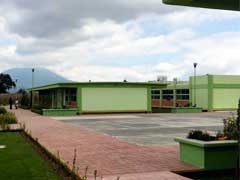

Dirección: Carretera libre s/n. Atlacomulco, localidad San Cristóbal de los Baños, Ixtlahuaca, Méx. C.P. 50754
Teléfonos: Sin teléfono fijo
Especialidades Formación para el trabajo: ■ Tecnologías de la Información y la comunicación
■ Director: Ing. Pedro Velazquez Contreras
■ Economia: Ing. Martha Lilia Gonzales Andrade
■ Tecnologias de la Información y Comunicación: Ing. Ana Idem Rodriguez Gonzalez
■ Temas Selectos de Física II: Ing. Blanca Ortiz Martinez
■ Cálculo Integral: Ing. Damian Monroy Medina
■ Filosofia: Ing. Hastel Vasti Antonio Reyes
■ Historia Universal: Ing. Columba Valente Cruz
■ Actividad Recreativa Deportiva: Ing. Dora Yessenia Cifuentes Aguilar
■ Ecología y medio ambiente: Ing. Amayranny Guzman Atanacio
■ Orientacion Educativa: Ing. Yaquelin Jose Jimenez
■ Ciencias de la Salud: Ing. Maria del Carmen Izquierdo Garza
■ Actividad Artistico Cultural: Ing. Cinthia Karina Gomez Chavarria
Crear una página web educativa que proporciona información accesible sobre la reforestación, promueve la conciencia ambiental y anime a la comunidad a participar en acrividades de plantación de árboles.
Esto contribuirá a la restauración de los ecosistemas locales y el bienestar de nuestra comunidad.
Nuestra misión es educar y sensibilizar a la comunidad sobre la importancia de los árboles y la redorestación fomentando la participación y conservación para restaurar nuestros ecosistemas.